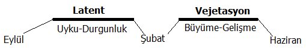
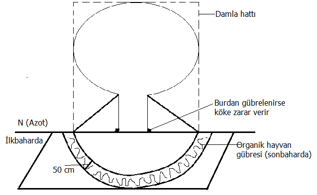

İkiye ayrılır.
Doğal gübre (organik)
Çiftlik gübresi:
Çiftlik gübresinin şerbeti önemli. %50 oranında su ile karıştırılarak verilir ve çok faydalıdır.
Kompost:
Yumurta kabukları, meyva kabukları, biçilen çim, ağaç kabukları vs. nin açılan çukurlarda biriktirilmesi ile elde edilir. Sıcak havada yapılır. Boşluklu olmalı, ara ara karıştırılmalı, nemli olacak ve açılan çukurun dibi su geçirmeyi engelleyecek şekilde kaplanmalı. 4-6 ayda hazır olur. Kışın olmaz.
Yeşil gübre:
Baklagil familyası bitkilerinin (fiğ, yonca) kök bölgelerinde yumrular var ve bakteri ve mantarlar ortak çalışır, kökte azot fiksasyonu yaparlar. Kökteki yumrular azot doludur.
Yapay gübre (inorganik)
Organik orijinli:
Hayvan ve bitki ürünlerini işleyen fabrikaların tırnak, kurumuş kan, hayvan kemikleri, balık yağları gibi maddelerle oluşturduğu gübrelerdir.
İnorganik orijinli:
Saf
Kompose
Kümes hayvanları gübresi özellikleri
Çabuk ayrışır (yanar), etkileri çok çabuk geçer. Bu nedenle hafif topraklar için uygun değildir. Özellikle güvercin gübresi en etkili olandır. Güvercin gübresi, koyun gübresinin 3 katı azot, 6 katı kalsiyum içerir.
Ahır hayvanları gübresi özellikleri
Bu hayvanların gübreleri zor ayrışır ve etkileri uzun süre devam eder. Taze olarak kullanılmaları doğru değildir (yabancı ot tohumları ve zararlı taşıyabilir).
Ağrı topraklarda kümes hayvanları gübresi, hafif topraklarda büyük baş hayvan gübresi kullanılır.
Yanmış gübre nasıl anlaşılır?
Gübrenin örnek bir renge sahip olması gerekir (tek tip renk). Ayakla basıldığında dağılması ve koyu kahverengi renkte olması gerekir.
Ahır gübresi şerbeti
Ahır gübresinin akan şerbeti çok önemli ve faydalıdır. Bitki için faydalı ve iyi bir çay denilebilir. Tek başına değil seyreltilerek kullanılmalı. En faydalı kısmı sayılabilir. %50 su %50 gübre şerbeti ile karıştırılarak bitkiye verilir. Asitlidir. Yabancı ot tohumları süzülür. N-P-K açısından zengindir.
Kompost
Besin değeri olan her türlü organik, ot, yaprak, dal parçalarının belli sürelerde olgunlaşması, ayrışması sonucu oluşan gübrelerdir. Olgun kompost gri-siyah renk alır (suyun kaçmaması lazım, havalandırma gerektirir. Sıcak havada yapılır. 4 ile 6 ayda oluşur). Hasta yapraklar konulmamalıdır.
Yeşil gübre
Özellikle baklagil familyası bitkileri (genellikle yem bitkileri, fiğ, bakla, soya fasulyesi, taş yoncası vs.). Bu türler köklerine azot depolayarak toprağı azotça zenginleştirir (mikro organizmalar yardımı ile). Gelişimlerini tamamlamış bu bitkilerin toprakla karıştırılmasına-kaynaştırılmasına yeşil gübreleme, bu iş için kullanılan bitkilere yeşil gübre bitkileri denir.
Azotlu gübreler
Amonyum nitrat (kireç - %100 azot yoktur, bir kısmı koruyucu. Toprakta tutuculuğa yardımcı olur.)
Amonyum sülfat (asit karakterde)
Üre (Beyaz, asite yakın)
1. Gübre paketi açıldıktan sonra nemden çok iyi korunmalıdır.
2. Toprağa iyi karıştırılmaz ise azot büyük oranda kayba uğrar
Fosforlu gübreler
İnceleri ağır topraklarda, kalınları hafif topraklarda kullanılır
Fosforik asit
Süper fosfat
Triple süper fosfat
Diamonyum fosfat
Potasyum gübreleri
Potasyum sülfat
Potasyum nitrat
Potasyum karbonat
Kalsiyumlu gübreler (Kireç ile bağdaştırma)
Asitli topraklarda ve yağmuru çok alan yerlerde (yağmur asit indiriyor) kalsiyum ihtiyacı fazladır (Karadeniz Bölgesi gibi). Topraktaki Kalsiyum ihtiyacı kireçleme ile giderilir (Kireç kalsiyum etkisindedir, yanmış-sönmüş daha iyi). Kalsiyum eksikliğini gidermek için özel olarak kalsiyumlu gübreler üretilmez. Diğer gübrelerde de bir miktar kalsiyum bulunur.
Magnezyumlu gübreler
Topraktaki magnezyum ihtiyacını gidermek için kireçtaşı kullanılır.
Demirli gübreler
Demir eksikliği toprakta demir bulunduğu halde birkilerin bu demirden yararlanamaması sonucu meydana gelir.
Eksikliği gidermek için:
Demir oksit – biraz daha asitli
Demir sülfat
kullanılır.
Çinkolu Gübreler
Eksikliği fazla görülen mikro-besin elementlerindendir.
Çinko sülfat
Çinko oksit
Çinko karbonat
pH’ları birbirinden farklıdır.
Manganlı Gübreler
Mangan oksit
Mangan sülfat
Bakırlı Gübreler
Bakır sülfat
Bakır oksit
Bakır klorür
Genellikle toz halindedir. Yağmur ve sulama suyu ile toprağa karışır.
Borlu Gübreler
Boraks
Borik asit
Borat
Molibdenli Gübreler
Sodyum molibdat
Amonyum molibdat
Bu iz elementler mutlaka verilir.
Üzüm asmasında salkım içinde büyük tanelerin yanında küçük taneler varsa iz elementler eksiktir.
Latent dönem - Uyku dönemi
Gübreleme yapılmaz. Uyuyan bitki yeni sürgün oluşturmaz
Şekil : Laten-vejetasyon zamanları
Vejetasyon dönemi – Uyanıklık dönemi
Gübreleme yapılabilir. Vejetasyon dönemi başlangıcında, yani erken ilkbaharda (Şubat-Mart-15) gözler uyanmaya başladığında, tomurcuklar patlamadan gübre verilir. Gözler hafif kabardığında uyanma başlamıştır.
Uyandıklarında tazecik bir iğnecik, sürgün verir. Bu vejetasyon dönemi başlamış demektir.
NOT:
Ahır gübreleri, etkileri uzun sürdüğünden sonbaharda verilebilir. Ticarilerde bu söz konusu değildir.
Toprak tavda olacak, çapa vurulduğunda helva gibi dağılır. Sonbahar tam toprak işleme ve gübreleme zamanıdır.
Kompost, şubat gibi verilmeye başlanabilir.
Kümes hayvanları gübresi etkisi hızla geçtiği için ticari gübreler gibi vejetasyon döneminde (ilkbahar) verilir.
Ahır hayvanları gübresi, uzun dönemde etkili olduğundan sonbaharda verilir.
Azot Eksikliğinin Belirtileri
Bitkilerde gelişme duraklamaları ve yapraklarda sararmalar.
Yaprakların küçülmesi, incelmesi, erken yaprak dökülmesi.
Sürgünlerde kısalma ve incelme.
Çiçeklerde miktarda artma olmasına rağmen küçülme.
İğne yapraklı türlerde sararma, bodurlaşma.
Genç bitkilerde yan dal oluşumunda yetersizlik.
Fosfor Eksikliğinin Bitkilere Etkisi
Yapraklarda dağılma, küçülme ve erken yaprak dökülmeleri.
Sürgünler kısa kalır. İnce ve sağlıksız bir görüntüde olur.
Çiçek açmalar gecikir, meyveler küçük kalır, tohum ve meyve teşekkülü olumsuz olur. Meyveler erken dökülür, verim düşer.
Bitki kolay kırılır ve yatar.
Bitki yeni dallanma yapamaz, zorlanır.
İğne yapraklılarda fosfor eksikliği sürgünlerin gri-mor renk alması ile kendini belli eder.
Potasyum Eksikliğinin Bitkilere Etkileri (Damar Tıkanıklığı)
Potasyum noksanlığında yaprak kenarları, yaprak damarlarının içleri sararır. Kahverengileşir.
Bu durum daha çok yaşlı yapraklarda, sonra da genç yapraklarda görülür.
Yapraklar buruşur, şekil değişikliğine uğrar.
Bitkide cüceleşme görülür.
Meyveler renksiz olur (olması gereken renkte olmaz).
Her büyüme dönemi bitki hastalıklara karşı duyarlı olur (potasyumu eksik olan ağaç her sene hasta olur).
Bitkiler genel olarak en gür büyüdükleri devrede en fazla besin maddesine ihtiyaç duyarlar. Azotlu gübreler ilkbahar başlangıcında yandan gübreleme şeklinde verilmelidir (erken ilkbahar).
Şekil: Damla hattı
N, P, K çok yüzeyden yapılabilir. Hayvan gübresi 20-30 cm derinlikten verilmelidir.
Ağacın damla hattının dışına 50 cm genişlikte açılan çukura gübre konulur ve toprağa karıştırılır.
2.Kural ağaç gövdesinden 30 cm daha yakın olamaz, 30 cm den uzak olmalıdır. Bütün bitkiler için geçerlidir.
Gübreleme zamanı kullanılacak gübrenin çeşidine göre değişir. Örneğin organik ve inorganik gübreler.
Bitkinin büyüme devresi içinde gübrelemeyi tekrar etmek gerekmektedir.
Gübre ihtiyacı çok fazla olan bitkilerde (yaprak dışında meyve, çiçek açan türler) ihtiyaçlarının hepsini birden vermek doğru değildir. Gelişme esnasında (vejetasyon dönemi) bir kaç defada gübreleme yapılmalıdır.
Örnek:
Yaprak açımı (ilkbahar)
Meyve oluşumu (Haziran da)
Gübreleme miktarı : 1 dönüme 5-6 ton doğal hayvan gübresi gerekir.
Yandan gübreleme
Bakınız bir önceki bölüm.Toprak yüzeyine tam alan serpme
Genelde ticari, N, P, K gübreler kullanılır. Genç ağaç ve çim alanlarda yapılır
Özellikle genç ağaçlar ve çim alanlar için kullanılır. Bilhassa azot gübrelemeleri için önemli bir tekniktir. 40 gr ikiye bölünür. Sağ ve sol köşeden 20’şer gr serpiştirilerek homojen bir dağılım sağlanır.
Matkap, burgu vs ile toprağı delerek gübreleme (Beslenme Bacaları)
Bu bacalar sürekli kullanılır. Gübre sıvı halde çeşitli tipte delici aletlerin açtığı deliklerden verilir. Verilen gübrenin ağaçların kök zonuna indirilmesi gerekir. Metrekareye 4-6 adet beslenme bacası tesis edilmelidir.
Toprağa karıştırma ve hendekleme
Bu yöntemde gübreler çapa, bel, kürek gibi araçlarla toprağa karıştırılarak verilir. Tepe tacı izdüşümünün dış hattı (damla hattı) çevresinde 50-60 cm kadar genişlikte açılan hendeğe gübre karıştırılarak gömülür (sonbaharda).
Yaprak gübrelemesi
Yapraklara püskürtülerek yapılan gübreleme tekniğidir. Özellikle gübreleme yaprak altından yapılır ise etkileri bitkiye çok çabuk geçer. Bilhassa iz elemenler (mikro besin elementleri; demir, bakır, molibden vs) bu yöntemle bitkiye verilmelidir.